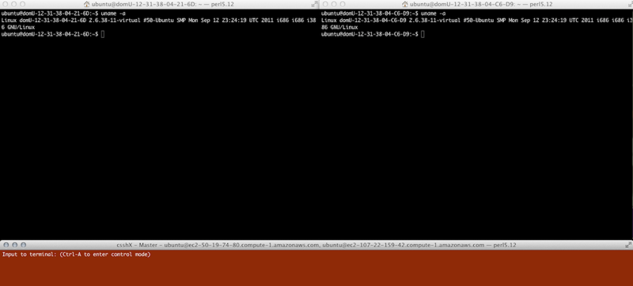
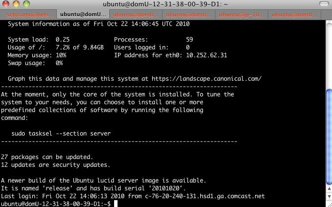

Subcommands for managing components from the Knife command line interfaceThis page contains documentation for each of the built-in knife sub-commands as well as popular plugins.Many sub-commands are documented on their own pages, though all are listed here for completeness.Common Options provides detail on the options can be passed to any subcommand, while sub-command specific options are reviewed in the relevant section of this page. Output Formats information on the amount of content displayed and modification options for the output. For all commands and subcommands, there is Contextual Help for the options available, including direct access to manpages. Knife sub-commands are structured such that commands have the form: NOUN verb NOUN (options).Because the Chef Server API is RESTful, the verb of a knife command is generally a CRUD operation:
|
|
Built In SubcommandsBootstrapThe Knife Bootstrap page explains the bootstrap subcommand. For Chef versions 0.10 and greater, the Knife Windows Bootstrap page describes the knife-windows plugin, which allows one to bootstrap Windows nodes. ClientThe Managing API Clients With Knife page explains the client subcommand used to manage API clients. Cloud PluginsUsing the cloud provider subcommands is explained on the Launch Cloud Instances with Knife page. There are two configure commands: configureCreate a configuration file for knife. This will prompt for values to enter into the file. Default values are listed in square brackets if no other entry is typed. Usage: knife configure (options) Additional Options:
Use -i if you would like to create an admin client (Hosted Chef users should note that creating a client as an admin does not change its permissions.) configure clientRead the knife.rb config file and generate a config file suitable for use in /etc/chef/client.rb and copy the validation certificate into the specified directory. Usage: knife configure client DIRECTORY CookbookManaging Cookbooks With Knife provides detail on the use of this command to interact with cookbooks on your Chef Server. Cookbook SiteManaging Cookbooks With Knife provides detail on the use of this command to interact with cookbooks on the Opscode Community Site. Data BagData bags are stores of arbitrary JSON data that and indexed and available via search. Managing Data Bags With Knife provides detail on the use of this command for managing data bags and data bag items. EnvironmentThe environment sub-command allows you to manage environments. See Managing Environments With Knife for use of the environments subcommand. Execknife exec allows you to run Ruby scripts in a context similar to that of Shef. See Knife Exec for documentation on this command. NodeSee Managing Nodes With Knife on use of the node command to modify the Nodes supported by the Chef Server. Specify PATTERN as a regular expression to limit the results. % knife recipe list 'couchdb::*' couchdb::main_monitors couchdb::master couchdb::default couchdb::org_cleanu RoleThe role sub-commands allow you to manage roles saved on the Chef server and are structured similarly to the other knife sub-commands. See Managing Roles With Knife for details on its use. Search query syntax is covered in greater depth in Search. The following is the basic structure of the knife search command as well as some useful examples. Usage: knife search INDEX QUERY (options) Additional Options:
Examples: Search for the ids of all nodes running in EC2: > knife search node 'ec2:*' -i 4 items found ip-0A7CA19F.ec2.internal ip-0A58CF8E.ec2.internal ip-0A58E134.ec2.internal ip-0A7CFFD5.ec2.internal Search for the EC2 instance type (flavor) of all nodes running in EC2 > knife search node 'ec2:*' -a ec2.instance_type 4 items found ec2.instance_type: m1.large id: ip-0A7CA19F.ec2.internal ec2.instance_type: m1.large id: ip-0A58CF8E.ec2.internal ec2.instance_type: m1.large id: ip-0A58E134.ec2.internal ec2.instance_type: m1.large id: ip-0A7CFFD5.ec2.internal Search for all nodes running Ubuntu: > knife search node 'platform:ubuntu' Search for all nodes running CentOS in the production environment. > knife search node 'chef_environment:production AND platform:centos' Usage knife ssh QUERY COMMAND (options) The QUERY part of the command uses the same syntax as the search subcommand. This will return a list of servers that it will ssh into and run the COMMAND you've listed. Additional Options:
Examples: Here's a simple example of this command: knife ssh "role:webserver" "sudo chef-client" This would ssh into all nodes that have the role "webserver" and run the command "sudo chef-client". You could also use this to upgrade all of your nodes: knife ssh name:* "sudo aptitude upgrade -y" The SSH Subcommand could also be used to find the uptime of all your web servers: % knife ssh "role:web" "uptime" -x ubuntu -a ec2.public_hostname ec2-174-129-127-206.compute-1.amazonaws.com 13:50:47 up 1 day, 23:26, 1 user, load average: 0.25, 0.18, 0.11 ec2-67-202-63-102.compute-1.amazonaws.com 13:50:47 up 1 day, 23:33, 1 user, load average: 0.12, 0.13, 0.10 ec2-184-73-9-250.compute-1.amazonaws.com 13:50:48 up 16:45, 1 user, load average: 0.30, 0.22, 0.13 ec2-75-101-240-230.compute-1.amazonaws.com 13:50:48 up 1 day, 22:59, 1 user, load average: 0.24, 0.17, 0.11 ec2-184-73-60-141.compute-1.amazonaws.com 13:50:48 up 1 day, 23:30, 1 user, load average: 0.32, 0.17, 0.15 Force a Chef run on each node returned by the search query: % knife ssh "role:web" "sudo chef-client" -x ubuntu -a ec2.public_hostname ec2-67-202-63-102.compute-1.amazonaws.com [Fri, 22 Oct 2010 14:18:37 +0000] INFO: Starting Chef Run (Version 0.9.10) ec2-174-129-127-206.compute-1.amazonaws.com [Fri, 22 Oct 2010 14:18:37 +0000] INFO: Starting Chef Run (Version 0.9.10) ec2-184-73-9-250.compute-1.amazonaws.com [Fri, 22 Oct 2010 14:18:38 +0000] INFO: Starting Chef Run (Version 0.9.10) ec2-75-101-240-230.compute-1.amazonaws.com [Fri, 22 Oct 2010 14:18:38 +0000] INFO: Starting Chef Run (Version 0.9.10) ec2-184-73-60-141.compute-1.amazonaws.com [Fri, 22 Oct 2010 14:18:38 +0000] INFO: Starting Chef Run (Version 0.9.10) ec2-174-129-127-206.compute-1.amazonaws.com [Fri, 22 Oct 2010 14:18:39 +0000] INFO: Chef Run complete in 1.419243 seconds ec2-174-129-127-206.compute-1.amazonaws.com [Fri, 22 Oct 2010 14:18:39 +0000] INFO: cleaning the checksum cache ec2-174-129-127-206.compute-1.amazonaws.com [Fri, 22 Oct 2010 14:18:39 +0000] INFO: Running report handlers ec2-174-129-127-206.compute-1.amazonaws.com [Fri, 22 Oct 2010 14:18:39 +0000] INFO: Report handlers complete ec2-67-202-63-102.compute-1.amazonaws.com [Fri, 22 Oct 2010 14:18:39 +0000] INFO: Chef Run complete in 1.578265 seconds ec2-67-202-63-102.compute-1.amazonaws.com [Fri, 22 Oct 2010 14:18:39 +0000] INFO: cleaning the checksum cache ec2-67-202-63-102.compute-1.amazonaws.com [Fri, 22 Oct 2010 14:18:39 +0000] INFO: Running report handlers ec2-67-202-63-102.compute-1.amazonaws.com [Fri, 22 Oct 2010 14:18:39 +0000] INFO: Report handlers complete ec2-184-73-9-250.compute-1.amazonaws.com [Fri, 22 Oct 2010 14:18:40 +0000] INFO: Chef Run complete in 1.638884 seconds ec2-184-73-9-250.compute-1.amazonaws.com [Fri, 22 Oct 2010 14:18:40 +0000] INFO: cleaning the checksum cache ec2-184-73-9-250.compute-1.amazonaws.com [Fri, 22 Oct 2010 14:18:40 +0000] INFO: Running report handlers ec2-184-73-9-250.compute-1.amazonaws.com [Fri, 22 Oct 2010 14:18:40 +0000] INFO: Report handlers complete ec2-75-101-240-230.compute-1.amazonaws.com [Fri, 22 Oct 2010 14:18:40 +0000] INFO: Chef Run complete in 1.540257 seconds ec2-75-101-240-230.compute-1.amazonaws.com [Fri, 22 Oct 2010 14:18:40 +0000] INFO: cleaning the checksum cache ec2-75-101-240-230.compute-1.amazonaws.com [Fri, 22 Oct 2010 14:18:40 +0000] INFO: Running report handlers ec2-75-101-240-230.compute-1.amazonaws.com [Fri, 22 Oct 2010 14:18:40 +0000] INFO: Report handlers complete ec2-184-73-60-141.compute-1.amazonaws.com [Fri, 22 Oct 2010 14:18:40 +0000] INFO: Chef Run complete in 1.502489 seconds ec2-184-73-60-141.compute-1.amazonaws.com [Fri, 22 Oct 2010 14:18:40 +0000] INFO: cleaning the checksum cache ec2-184-73-60-141.compute-1.amazonaws.com [Fri, 22 Oct 2010 14:18:40 +0000] INFO: Running report handlers ec2-184-73-60-141.compute-1.amazonaws.com [Fri, 22 Oct 2010 14:18:40 +0000] INFO: Report handlers complete Note the -x option tells knife to invoke ssh as the "ubuntu" user. The -a option tells knife to use the "ec2.public_hostname" attribute for opening the connection - default is fqdn. Interpolation Rules for the SSH SubcommandBecause knife runs at a command prompt, it is important to be clear about interpolation rules for the SSH subcommand. For example: assume that the nodes in a db role have a schema that is the same as the node, and that said schema contains a table named "dollars". The command below will be interpolated in the context of the local machine. That is to say the $(hostname) will be the name of the machine from which knife was invoked. This is to be expected because the local shell sees double quotes and makes the substitution before the command is sent to the node(s). A mysql error from each node should be expected in this case. % knife ssh "role:db" "mysql $(hostname) -u<username> -p<secret> -e 'select count(*) from dollars'" Now consider the next command. It will be interpolated in the context of the node. That is to say the $(hostname) will be that of the node on which the command is run for each node in the db role. This is to be expected because the local shell sees single quotes and takes the string as a literal. The command is then interpolated by the each node's shell. A count of the number of rows in the dollars table from each node should be expected in this case. % knife ssh "role:db" 'mysql $(hostname) -u<username> -p<secret> -e "select count(*) from dollars"' The lesson here is to keep the interpolation rules of your local shell in mind when passing a command to your nodes via knife ssh. Node Environment Customization ConsiderationsThe interpolation rules for the SSH command can cause the behavior of knife ssh to appear erratic when custom configurations are used on the node. To understand how this can happen, consider the following scenario: A user named "fred" places a .my.cnf file in his home directory on all of his nodes. Below is a template for this. [client]
user = fred
password = myex-wifesmaidenname
database = #{node[:hostname]}
The .my.cnf file is read when a mysql client is invoked and substitutes the username, password and database behind the scenes so they do not need to be typed. If, on his local machine, Fred invokes knife like this: % knife ssh "role:db" "mysql ${hostname} -e 'select count(*) from dollars'"
The result in this case will still be a count of rows in the dollars table for each node. In other words, it appears that interpolation takes place in the context of the node rather than locally. However, what actually happened is the command mysql -e 'select count(*) from dollars' was sent to the node and the mysql client read the coincidentally correct database name from the .my.cnf file. Note that there are curly braces around the hostname, not parenthesis, so ${hostname} will evaluate to an empty string. It becomes quickly apparent that setting a different database name in the .my.cnf table from that of the node in this case could lead to even greater confusion when mysql returns saying the table does not exist in that schema. Or, if another user issues the same knife command and has no .my.cnf set, they will get an authentication error from mysql. The lesson here is to be aware of any personal and global customizations because they can cause apparently erratic behavior that is, in fact, exactly correct. Ensuring Process Runs Survive SSH SessionWhen a node script is run to start a background process, the script can complete and exit correctly, however the service that was to be run in the background had not completed prior to script closure. This appears most often with custom start-up scripts in /etc/init.d. These apparent inconsistencies are a product of how ssh handles terminal connections remotely, not issues with the knife-ssh subcommand. Consider a custom server process called spaminatord, that connects to various university websites and gathers student information. If the start up script contains the below line to start spaminatord, it is at risk for exhibiting this behavior. su -l spaminator -c "spaminatord --host=$PRIVATE_IP >> /var/log/my-corp/spaminatord.start.log &" To insure the process runs beyond the life of the ssh session, the following need to be added to the command starting the process. su -l spaminator -c "nohup spaminatord --host=$PRIVATE_IP >> /var/log/my-corp/spaminatord.start.log 2>> spaminatord.start.log < /dev/null &" It is important to note that nohup and the redirection rules are all necessary to insure a clean start. Alternate SSH ModesThe SSH subcommand supports a few alternate modes. Interactive Modestart an interactive ssh session. Commands will run agains all nodes (or a subset) returned by search query. % knife ssh "role:web" interactive -x ubuntu -a ec2.public_hostname Connected to ec2-184-73-9-250.compute-1.amazonaws.com, ec2-75-101-240-230.compute-1.amazonaws.com, ec2-174-129-127-206.compute-1.amazonaws.com, ec2-67-202-63-102.compute-1.amazonaws.com and ec2-184-73-60-141.compute-1.amazonaws.com To run a command on a list of servers, do: on SERVER1 SERVER2 SERVER3; COMMAND Example: on latte foamy; echo foobar To exit interactive mode, use 'quit!' knife-ssh> uptime ec2-174-129-127-206.compute-1.amazonaws.com 13:59:31 up 1 day, 23:35, 1 user, load average: 0.06, 0.11, 0.09 ec2-67-202-63-102.compute-1.amazonaws.com 13:59:31 up 1 day, 23:42, 1 user, load average: 0.08, 0.11, 0.09 ec2-184-73-9-250.compute-1.amazonaws.com 13:59:31 up 16:53, 1 user, load average: 0.08, 0.13, 0.10 ec2-75-101-240-230.compute-1.amazonaws.com 13:59:31 up 1 day, 23:08, 1 user, load average: 0.11, 0.15, 0.10 ec2-184-73-60-141.compute-1.amazonaws.com 13:59:31 up 1 day, 23:39, 1 user, load average: 0.17, 0.16, 0.14 knife-ssh> sudo service apache2 status ec2-75-101-240-230.compute-1.amazonaws.com Apache is running (pid 10551). ec2-184-73-60-141.compute-1.amazonaws.com Apache is running (pid 10330). ec2-184-73-9-250.compute-1.amazonaws.com Apache is running (pid 6013). ec2-174-129-127-206.compute-1.amazonaws.com Apache is running (pid 10453). ec2-67-202-63-102.compute-1.amazonaws.com Apache is running (pid 29696). terminal multiplexer support - launch a tmux (or gnu screen) session with a window for each node returned by the search query: tmux
% knife ssh "role:web" tmux -x ubuntu -a ec2.public_hostname Warning: Permanently added 'ec2-184-73-9-250.compute-1.amazonaws.com,184.73.9.25 0' (RSA) to the list of known hosts. Linux domU-12-31-38-00-39-D1 2.6.32-308-ec2 #16-Ubuntu SMP Thu Sep 16 14:28:38 U TC 2010 i686 GNU/Linux Ubuntu 10.04.1 LTS Welcome to Ubuntu! * Documentation: https://help.ubuntu.com/ System information as of Fri Oct 22 14:02:21 UTC 2010 System load: 0.08 Processes: 59 Usage of /: 7.2% of 9.84GB Users logged in: 0 Memory usage: 10% IP address for eth0: 10.252.62.31 Swap usage: 0% Graph this data and manage this system at https://landscape.canonical.com/ --------------------------------------------------------------------- At the moment, only the core of the system is installed. To tune the system to your needs, you can choose to install one or more predefined collections of software by running the following command: sudo tasksel --section server --------------------------------------------------------------------- 27 packages can be updated. 12 updates are security updates. A newer build of the Ubuntu lucid server image is available. It is named 'release' and has build serial '20101020'. Last login: Fri Oct 22 14:01:23 2010 from c-76-20-240-131.hsd1.ga.comcast.net ubuntu@domU-12-31-38-00-39-D1:~$ [knife] 0:zsh- 1:ec2-184-73-9-250.compute-1.amazonaws.com* 2:ec2-75-101-240-230.compute-1.a> "helsinki.chisamore.com" 10:02 22-Oct-10 GNU ScreenWarning: Permanently added 'ec2-184-73-60-141.compute-1.amazonaws.com,184.73.60.141' (RSA) to the list of known hosts. Linux domU-12-31-38-00-7C-B7 2.6.32-308-ec2 #16-Ubuntu SMP Thu Sep 16 14:28:38 UTC 2010 i686 GNU/Linux Ubuntu 10.04.1 LTS Welcome to Ubuntu! * Documentation: https://help.ubuntu.com/ System information as of Fri Oct 22 14:12:08 UTC 2010 System load: 0.15 Processes: 61 Usage of /: 7.2% of 9.84GB Users logged in: 1 Memory usage: 10% IP address for eth0: 10.252.131.69 Swap usage: 0% Graph this data and manage this system at https://landscape.canonical.com/ --------------------------------------------------------------------- At the moment, only the core of the system is installed. To tune the system to your needs, you can choose to install one or more predefined collections of software by running the following command: sudo tasksel --section server --------------------------------------------------------------------- 27 packages can be updated. 12 updates are security updates. Last login: Fri Oct 22 14:06:50 2010 from c-76-20-240-131.hsd1.ga.comcast.net ubuntu@domU-12-31-38-00-7C-B7:~$ -129-127-206. 3- ec2-67-202-63-102.co 4* ec2-184-73-60-141.compute-1.amazonaws knife ssh role:web csshX
You can launch concurrent ssh sessions using csshX: knife ssh 'ec2:*' -a ec2.public_hostname -x ubuntu csshx This will open a new terminal window for each machine as well as a master terminal which can be used to send commands to all of the nodes.  Mac Terminallaunch a new terminal window with a separate tab (and ssh session) for each node returned by the search query.
%knife ssh "role:web" macterm -x ubuntu -a ec2.public_hostname  Usage: knife status QUERY(options) Specifying a QUERY allows you to restrict the results to a subset of the nodes. Additional Options:
Examples: Show the status of all nodes in your organization % knife status 20 hours ago, dev-vm.chisamore.com, ubuntu 10.04, dev-vm.chisamore.com, 10.66.44.126 3 hours ago, i-225f954f, ubuntu 10.04, ec2-67-202-63-102.compute-1.amazonaws.com, 67.202.63.102 3 hours ago, i-a45298c9, ubuntu 10.04, ec2-174-129-127-206.compute-1.amazonaws.com, 174.129.127.206 3 hours ago, i-5272a43f, ubuntu 10.04, ec2-184-73-9-250.compute-1.amazonaws.com, 184.73.9.250 3 hours ago, i-226ca64f, ubuntu 10.04, ec2-75-101-240-230.compute-1.amazonaws.com, 75.101.240.230 3 hours ago, i-f65c969b, ubuntu 10.04, ec2-184-73-60-141.compute-1.amazonaws.com, 184.73.60.141 Include the nodes' run list in the status % knife status --run-list 20 hours ago, dev-vm.chisamore.com, ubuntu 10.04, dev-vm.chisamore.com, 10.66.44.126, role[lb]. 3 hours ago, i-225f954f, ubuntu 10.04, ec2-67-202-63-102.compute-1.amazonaws.com, 67.202.63.102, role[web]. 3 hours ago, i-a45298c9, ubuntu 10.04, ec2-174-129-127-206.compute-1.amazonaws.com, 174.129.127.206, role[web]. 3 hours ago, i-5272a43f, ubuntu 10.04, ec2-184-73-9-250.compute-1.amazonaws.com, 184.73.9.250, role[web]. 3 hours ago, i-226ca64f, ubuntu 10.04, ec2-75-101-240-230.compute-1.amazonaws.com, 75.101.240.230, role[web]. 3 hours ago, i-f65c969b, ubuntu 10.04, ec2-184-73-60-141.compute-1.amazonaws.com, 184.73.60.141, role[web]. show the status of a subset of nodes returned by a search query % knife status "role:web" --run-list 3 hours ago, i-225f954f, ubuntu 10.04, ec2-67-202-63-102.compute-1.amazonaws.com, 67.202.63.102, role[web]. 3 hours ago, i-a45298c9, ubuntu 10.04, ec2-174-129-127-206.compute-1.amazonaws.com, 174.129.127.206, role[web]. 3 hours ago, i-5272a43f, ubuntu 10.04, ec2-184-73-9-250.compute-1.amazonaws.com, 184.73.9.250, role[web]. 3 hours ago, i-226ca64f, ubuntu 10.04, ec2-75-101-240-230.compute-1.amazonaws.com, 75.101.240.230, role[web]. 3 hours ago, i-f65c969b, ubuntu 10.04, ec2-184-73-60-141.compute-1.amazonaws.com, 184.73.60.141, role[web]. createAdds one or more tags to node. knife tag create NODE TAGS... deleteRemoves one or more tags from node. knife tag delete NODE TAGS... listLists the tags applied to node. knife tag list NODES... See also Managing Nodes with Knife
ExtrasDownload the script and either source it in .bashrc or drop it in /etc/bash_completion.d/. The completion employs optional caching if the directory $CHEF_HOME/.completion_cache exists and is writable (CHEF_HOME is ~/.chef by default). To clear the cache (e.g. because new roles or nodes are available) erase the files in the cache directory, they will be regenerated on the next completion run. Note for OSX users: The script requires GNU sed to work, install gsed with macports or gnu-sed with Homebrew. You will also need the bash-completion script library if you do not already have it installed – a package exists named as such in macports and Homebrew (e.g. brew install bash-completion). Use the etc/bash_completion.d prefix appropriate for your environment.
|
|
|


{kind=link}
{kind=link}
{kind=link}
{kind=link}
{kind=link}
{kind=link}